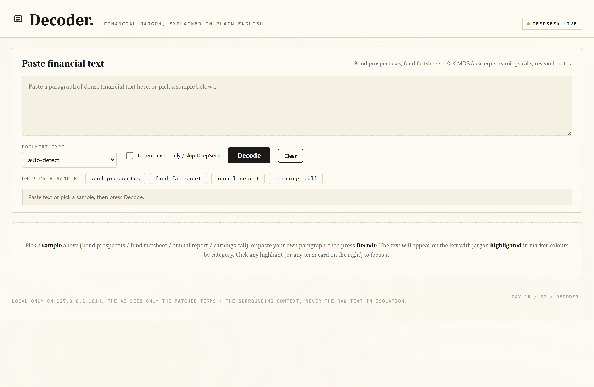
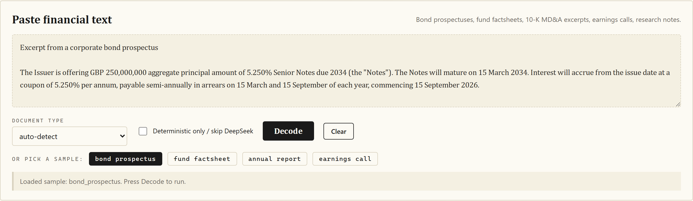
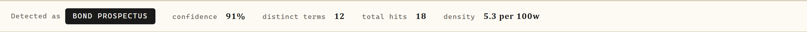
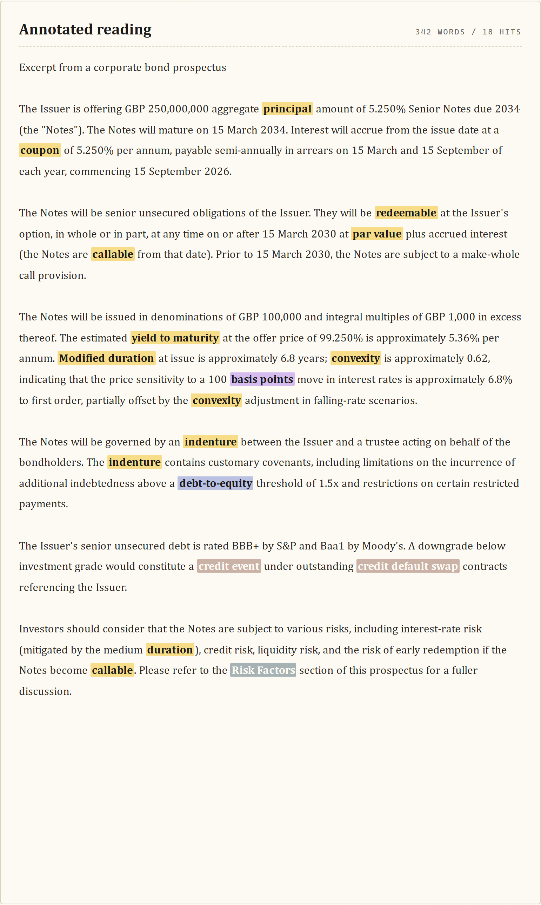

Drop in a finance document; AI finds the jargon, explains it in plain English, builds a glossary.
Local-only Flask web app and CLI that takes any paragraph of dense financial text and produces a plain-English glossary, tuned to the document type. Bond prospectuses, fund factsheets, annual reports, earnings call transcripts, research notes -- paste anything and the matched jargon gets highlighted in marker-coloured strokes by category, with a click-through term card explaining each one.
DeepSeek identifies and explains jargon



